Latest documentation available at brailleblaster.org
BrailleBlaster (BB) is a braille translation program that is designed to work with files that have semantic markup. Semantic markup is information provided in the file that identifies what kind of content a specific piece of text is. This information can help improve and automate the braille translation process. For example, a page number can be identified in the source file (and to software) as a page number, rather than just a number. This markup, created by the publisher, is used to help correctly format the elements of the file before it is even presented to the user.
This process is not perfect. There are standards that publishers follow, but not all publishers apply the standards in the same way. There are also several essential differences between how braille and print format textbooks. To the print world, an exercise is just a nested list. In braille, there are only four heading levels; in print, there are dozens of variations of font and size used to indicate heading levels. These are just two examples of the many differences between print and braille. In creating BrailleBlaster, APH hopes to provide the necessary tools to overcome the obstacles between print and braille translation.
We hope you enjoy working with BrailleBlaster. It is our goal to help you do the work that you love so that people everywhere can get the braille that they need.
BrailleBlaster has two file types that are specific to this software: BBX and BBZ. These files types were developed for certain explicit purposes within the software.
BBX file type: BrailleBlaster currently works with text files and XML (eXtensible Markup Language) files, such as NIMAS. When a file is opened it is converted to the BBX (BrailleBlaster XML) file type.
BBZ file type: BrailleBlaster can also work with a zipped NIMAS file set. If you save the zip file, it is saved as a BBZ (BrailleBlaster zip) file type, and all of the images in the zipped folder are maintained in the saved file set. This allows certain tools to display each image instead of just the image name.
BrailleBlaster can be downloaded from the BrailleBlaster Download page.
The link takes you to the download page for BrailleBlaster, which should appear like this:
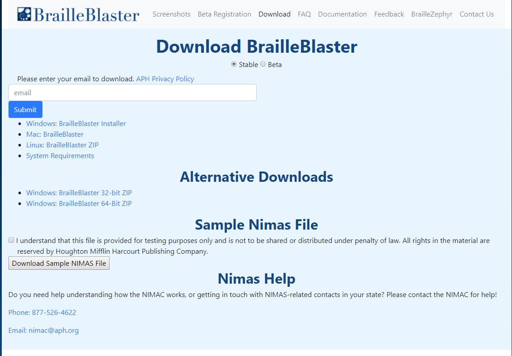
You must submit an email address in the required field before you can download any of the files on this page.
BrailleBlaster will work on Windows, Mac, and Linux operating systems. You should select the version that matches your computer's operating system to download.
If you are a Windows user we recommend you download the BrailleBlaster Windows installer, using the link highlighted below.
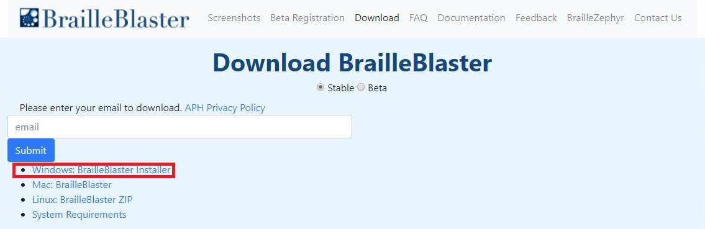
The installer is the easiest, fastest way to setup BrailleBlaster on a Windows operating system. After the download is complete, locate the file on your hard drive (saved to your default download directory) and double click it to run. You will be shown this screen, the BrailleBlaster Setup Wizard.
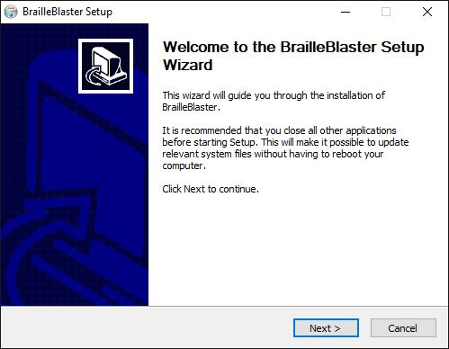
Click the Next button to continue. The next screen asks you to choose an installation location for BrailleBlaster. The default is C:\Program Files\brailleblaster\ but can be changed to anything you wish. Click the Browse button to find and select a different installation directory than the default. This screen also shows hard disk space required for the installation and the amount of free space on the default hard disk.
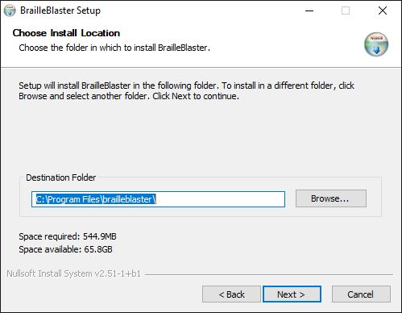
Click Next to continue. The next screen asks you to select the name of the Start Menu folder you want BrailleBlaster to use for its shortcuts. The default is simply BrailleBlaster, but can be changed to anything you want. You may also select "Do not create shortcuts" by checking the box near the bottom of this window if you don't want the installer to create shortcuts for the program.
!installer3.jpg(BrailleBlaster installation screen showing the default start menu shortcut folder, "BrailleBlaster", followed by the Install button).
Click Install to begin the installation process, or cancel to close out of this window. The installer will extract and copy all the necessary files for BrailleBlaster, as displayed in the progress bar. This may take several minutes.
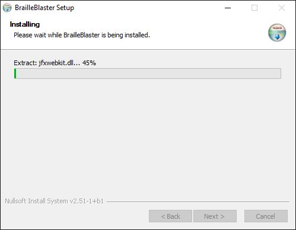
When the progress bar is filled, the process is complete. Click Next to continue.
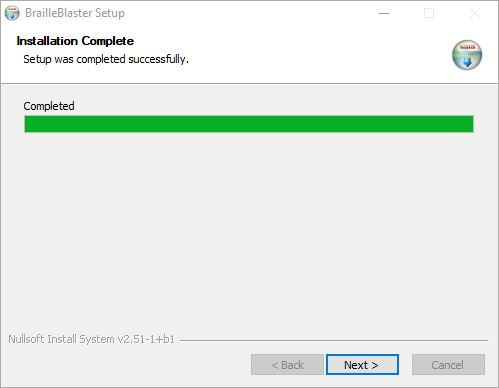
The final screen of the installation process now appears, giving you several options. Each option is checked by default, but can be unchecked to disable that feature.
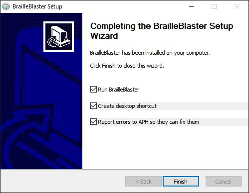
Click Finish to complete the installation and close this window. If you left the Run BrailleBlaster box checked, the program will now launch.
If you are not an administrator on your PC an don't have permissions to install programs, you can still download BrailleBlaster as a zip file, bypassing the installer process. You have two options for downloading the zip file: the 32-bit version and the 64-bit version.
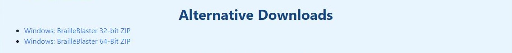
Before downloading it is important to know the difference between 32-bit and 64-bit. Most modern computers operate with a 64-bit processing capacity, but not all operating systems are designed to take full advantage of this, using instead a 32-bit software framework. While programs designed with a 32-bit chipset can function in a 64-bit operating system, programs designed with a 64-bit chipset cannot work in a 32-bit operating system. Fortunately, BrailleBlaster is available in both 32-bit and 64-bit versions, but when installing from the zip file, you must know in advance which version you need. The easiest way to determine which chipset your operating system uses is to open the Windows Control Panel, then open System. This screen may look slightly different depending on what version of Windows you are using, but the important information will all be there. Look for the words "System type" under the System heading. On a 64-bit system, you will see something like this:
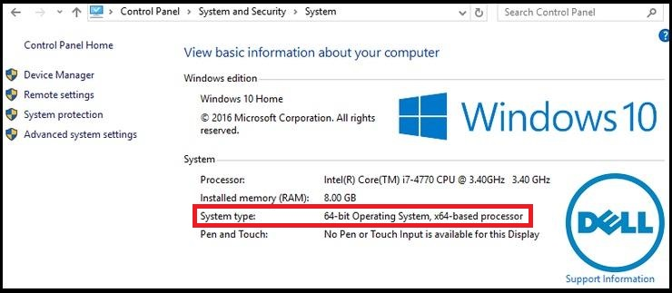
A 32-bit system will instead display a similar line of text but with 32-bit in place of 64-bit. With this information in mind, select the zip file that matches your system's chipset (either 32- or 64-bit) to download.
Once downloaded, navigate to where you saved the file. Right-click it and select "Extract All."
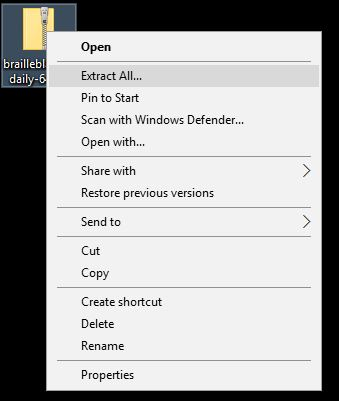
This opens the zip file extraction dialog window. Here, you are prompted to select the destination to which the files in the zip will be extracted and installed. The default is the same folder in which the zip file is currently located, but this can be changed by clicking the Browse button and navigating to the folder of your choice.
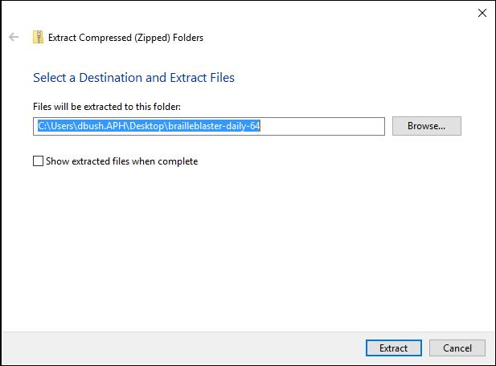
When satisfied with the extraction destination, click Extract to begin the extraction process. This may take several minutes. If you checked the "Show extracted files when complete" box, the destination folder will open once the extraction is complete. If not, you will have to navigate to the folder where you extracted to to find the newly-created BrailleBlaster folder, which will appear like this:
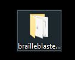
Open the file folder. You will see a screen like the one below, containing all the necessary files for BrailleBlaster to run. The file highlighted in the screenshot, brailleblaster-windows.exe, is the one you need to double-click on to run BrailleBlaster.
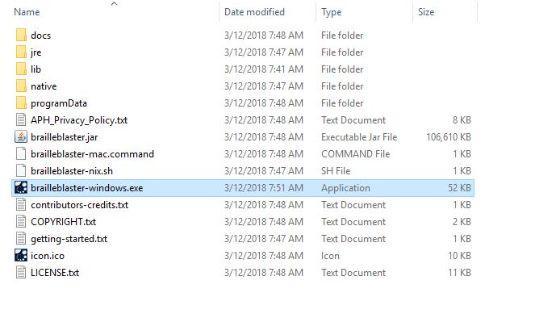
Note that when installing BrailleBlaster from a zip file, you do not have option to automatically create a shortcut. You can do this manually, however, by right clicking the brailleblaster-windows.exe file in the extracted folder and selecting "Create shortcut".
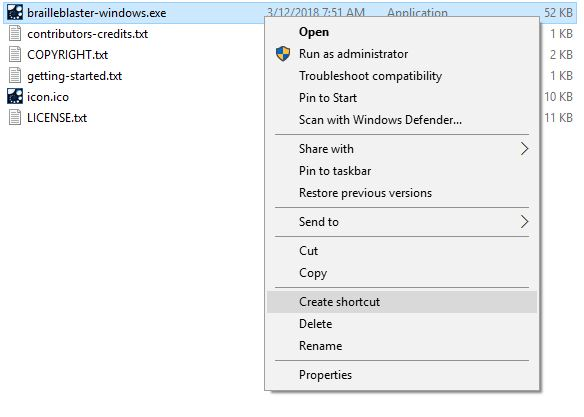
This will create a shortcut file in the same directory as the file it's a shortcut to (in this case, brailleblaster-windows.exe).
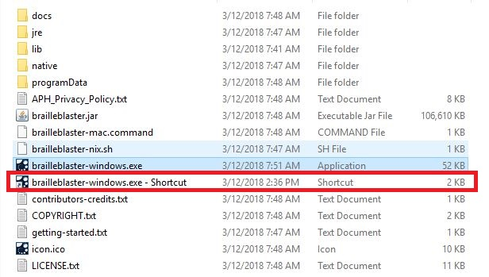
You may then copy and paste this file wherever you like (typically, on your desktop) and use it to launch BrailleBlaster instead of having to open the extracted folder each time.
If you are a Mac user, click the link shown below to download BrailleBlaster.
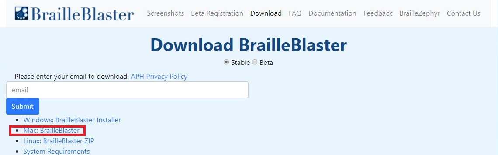
If you are a Linux user, click the link shown below to download a zip file containing a full install of BrailleBlaster.
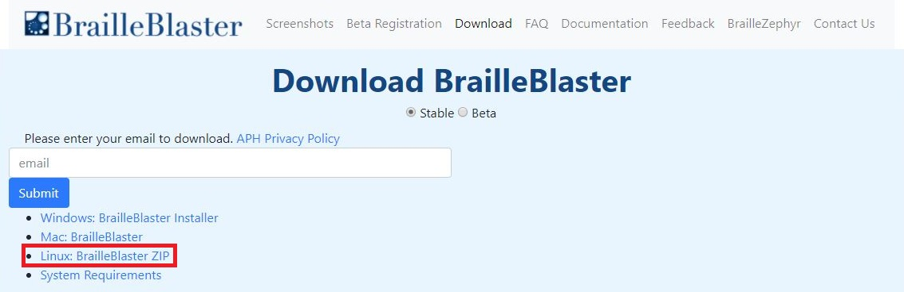
Periodically, when you launch BrailleBlaster, you will see the following window pop up:
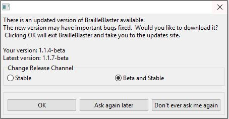
This is the release channel selection dialog. There are two release versions of BrailleBlaster, Stable and Beta.
Both channels are updated roughly every two weeks.
Clicking OK in the dialog will close BrailleBlaster and open the BrailleBlaster download website where you can follow the steps outlined in the download documentation above to update to the latest version. Please note: BrailleBlaster must remain closed during the installation of a new version, because certain files are inaccessible when the program is open, which will cause the installation to fail.
If you are updating with the zip file (as opposed to the installer), make sure you delete the previous zip file and extracted file folder before extracting the new version to avoid having multiple conflicting versions of BrailleBlaster on your system.
Clicking Ask again later will close the dialog and allow you to operate BrailleBlaster normally, but the dialog will reappear the next time BrailleBlaster launches.
Clicking Don't ever ask me again will close the dialog and allow you to operate BrailleBlaster normally, and the dialog will not reappear again on subsequent launches. You can still manually check for updates by going to Help -> Check for Updates, as shown below:
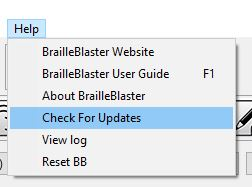
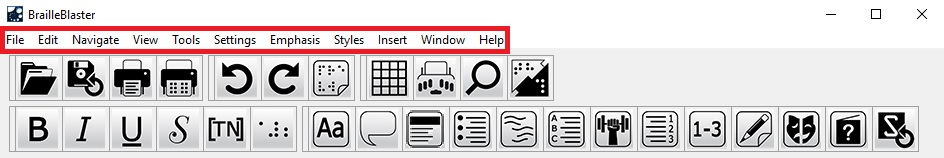
The user can access all of the functions of BrailleBlaster using the Menu Bar. The User Guide covers each menu in turn.
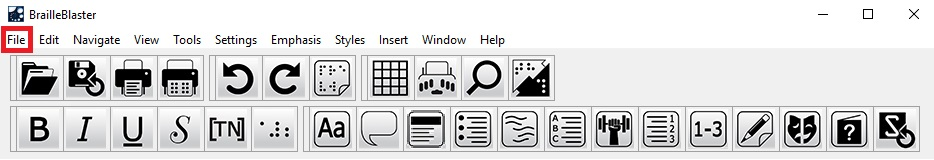
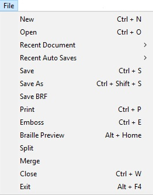
Shortcut: Ctrl + N
Opens a new tab and allows the creation of an original braille document.
Shortcut: Ctrl + O
Browses file directory for a document and opens selected document.
Besides BBX and BBZ files, only NIMAS files, NIMAS zip files, and Plain text files are shown as available options in the Open menu. When opened, NIMAS files and NIMAS zip files have the best automatic formatting, while Plain text files have basic automatic formatting applied. For full support of all of BrailleBlaster's features, NIMAS zip files are preferred.
To access other sources of content, such as Word documents, PDFs, web pages, and other text, copy and paste the text into BrailleBlaster for basic automatic formatting.
BrailleBlaster can also open BRL files. It opens them as direct-translated text in the print view, where it can be edited normally.
BRL files can be created from any standard text file (TXT) through APH's Send to Braille tool, usable in Windows operating systems.
Future versions of BrailleBlaster will have support for more file formats.
Displays a list of recently opened documents for quick access.
BrailleBlaster will now make an auto save of your work every 5 seconds. This auto save feature is meant to help users recover if BrailleBlaster should stop for any reason other than the user intentionally closing it. Auto saves are temporary and so if an auto save is created and you intentionally close BrailleBlaster without manually saving a copy, the auto save will be deleted. Only ten auto saves are kept at a time.
If your instance of BrailleBlaster should close unexpectedly, a dialog will appear the next time you start the program that will allow you to easily open the last autosave of that file so you can continue working.
Shortcut: Ctrl + S
Saves any changes made to a document.
Shortcut: Ctrl + Shift + S
Saves working document as a new file, preserving original document.
BRF is an acronym for Braille Ready File, which is a file format that preserves formatting for sharing and embossing the document. The Save BRF tool allows the user to save whole documents and individual volumes in a variety of ways.
No Volume Breaks: If the document has no volume breaks, clicking this button saves the entire document as a single BRF with no further input from the user other than naming the BRF.
With Volume Breaks: If volume breaks have been inserted a dialog is opened displaying each volume and a number of options for how to save them.
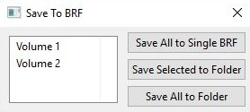
Individual Volumes: Individual volumes may be saved to separate files. To do this, follow the steps below:Multiple Volumes: Multiple volumes may be saved to separate files as well. The file name for each volume is the name of the document followed by the name of the volume. For example, a file called Literature.bbx with two volumes (one preliminary and one normal) automatically has two saved brfs: Literature_preliminary1.brf and Literature_volume1.brf.
To select multiple volumes, follow these steps: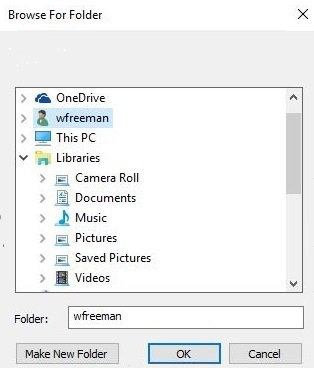
Save All to Folder: Utilizing this button will save all volumes to a single folder as individual BRFs using the same naming conventions as "Multiple Volumes".
For more information on inserting, changing, and deleting volumes within the document, see Volume Manager.
Shortcut: Ctrl + P
Sends the file to a printer.
Shortcut: Ctrl + E
If you have not embossed with this installation of BrailleBlaster before, you will be prompted to set up a profile for your embosser:
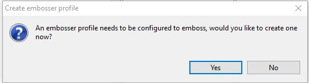
Click Yes to open the Edit embosser configuration window.
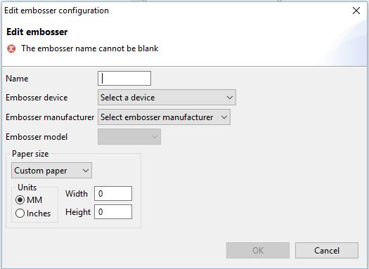
To configure your embosser profile, fill out and select from the fields in the dialog. You can click the Cancel button to close the dialog without saving any changes at any time.
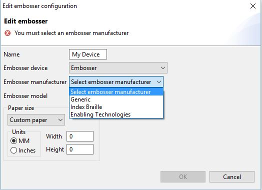
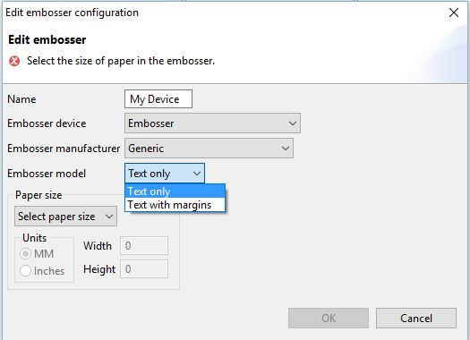
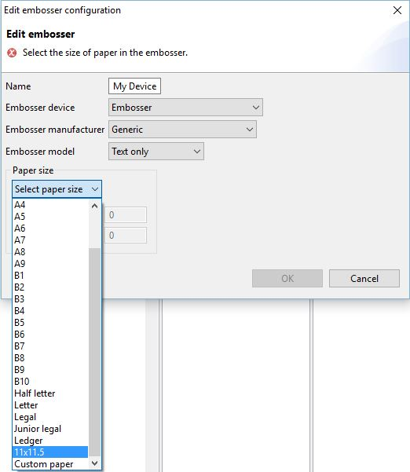
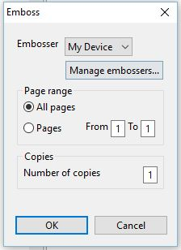
From here, you can emboss braille via your chosen embosser. You can select the number of copies you wish to emboss, as well as the page range (All or a range between 1 and the final page of the document).
This embosser will now be your default. You can change the embosser settings at any time by clicking the Manage embossers button. This will open the general BrailleBlaster settings menu on the Embosser settings tab.
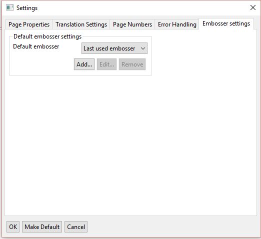
Here, you can add a new embosser (following the same steps outlined above) and set which of your embossers is the default. You can also delete an existing embosser profile (click the Remove button with the desired embosser selected in the dropdown menu), or edit the settings of one (click the Edit button with the desired embosser selected in the dropdown menu). You can save all your settings in any of the tabs as defaults at any time by clicking the Make Default button at the bottom of the menu. Click Cancel to exit the Settings menu without saving any changes, or OK to exit the menu with all changes saved.
Shortcut: Alt + Home
The Braille Preview is the display of the file as it appears as a Braille Ready File (BRF). BRF is the file format used to emboss the document. The difference between the two is that the Braille preview conforms to both view Braille or view ASCII settings. By definition, a BRF is always in braille.
The Braille Preview displays in Dual View mode. This mode displays the braille pages in the same sequence as they are embossed, meaning the odd-numbered pages are on the right and the even-numbered pages are on the left. This ensures that the content is on the correct facing pages. Even single-sided materials will be displayed with this layout. If you are working with a single-sided document, ignore the distinction between left and right pages.
Text can be navigated by page number in 3 ways: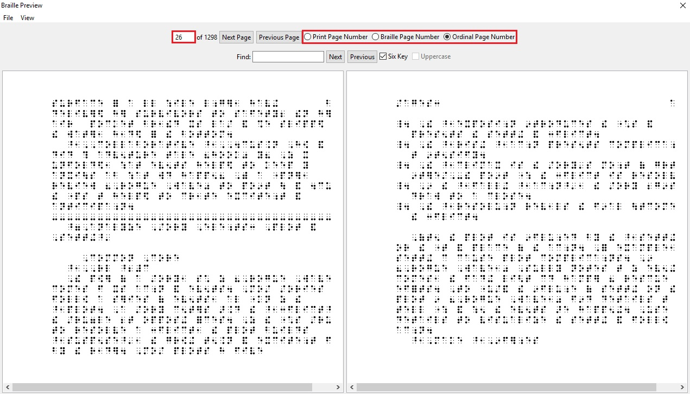
Ordinal page numbers identify the pages to a printer when individual pages need to be reprinted due to corrections made. How you navigate the document depends on how the document is formatted within BrailleBlaster (how many t-pages, p-pages, etc.).
Example: The second page of the main body of a document could have a print page number of b1, a braille page number of 2, and an ordinal page number of 30. The number displayed is updated as the page number type is changed.
You can also navigate with the Find textbox. The Six-Key checkbox enables six-key typing in the text box, if unchecked ASCII should be entered to search. The uppercase checkbox only becomes available when a BRF is loaded into BrailleBlaster. When checked, the Uppercase checkbox will take lowercase ASCII that BrailleBlaster produces in the Find textbox and use it to find uppercase ASCII that is in the document. This is important because some BRFs use uppercase ASCII while others use lowercase ASCII to simulate braille. When the search reaches the end of the document it is wrapped back to the beginning.
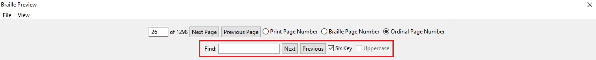
You can also emboss a BRF straight from the Braille Preview. Simply go to File > Emboss or use the shortcut Ctrl + E. This will open the emboss dialog that also appears when embossing a BBX or BBZ file. However, you must emboss the entire BRF not just of part of a BRF.
The Split option allows the user to divide the source file into two or more separate files, so that different parts of the book can be transcribed by multiple transcribers at the same time.
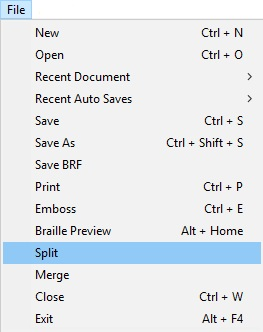
Choosing this menu option opens a prompt asking the user to confirm the action.
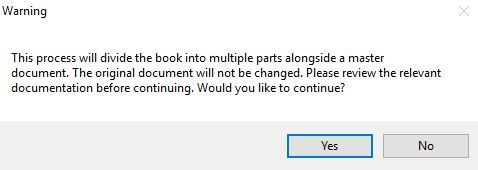
Click Yes to continue. This opens the Split Book screen.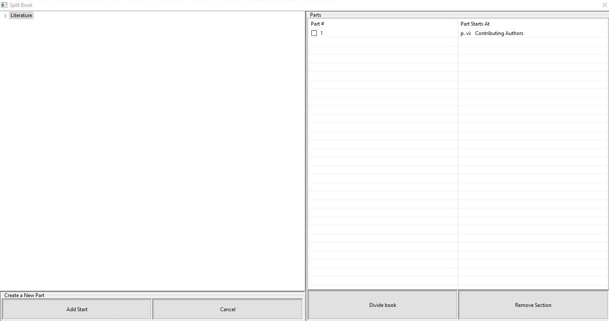
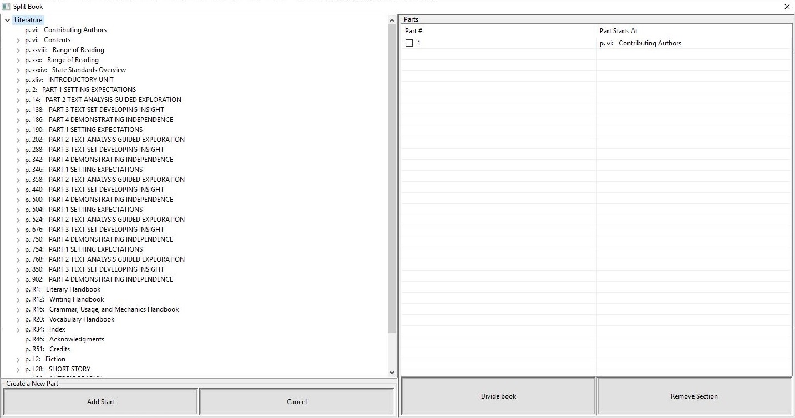
The book sections seen in the left-hand pane are automatically provided in the publisher's file.
Below the list of sections is a panel labeled Create a New Part containing two buttons: Add Start and Cancel. Add Start will add the beginning of a selected new part to the pane on the right and will serve as the beginning of a new part when you divide. Cancel will cancel dividing the book and all changes done in this session will be cleared.
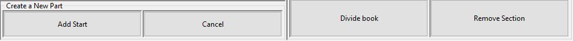
The first part is automatically selected as the beginning of the file. Once the start point of the second part is selected, decide where the third and further parts (if any) begin. Each selected part contains all of the text up to the point where the next part begins. There is no maximum limit to the number of parts that can be designated, but a minimum of two is required.
Using the screenshot below as an example, there are three parts selected from the various sections of the book.
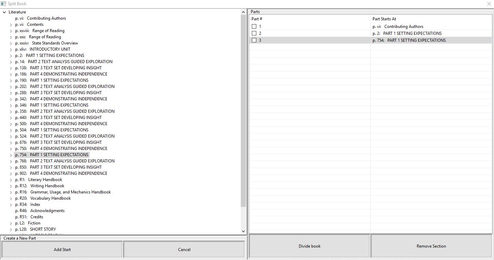
Remove Section: This button is used to delete parts that are selected under the Parts frame.
Click on the check box of the part or parts to be deleted. Then click the Remove Section button. The selected sections are removed from the list of parts. Note that this action removes the section entirely.
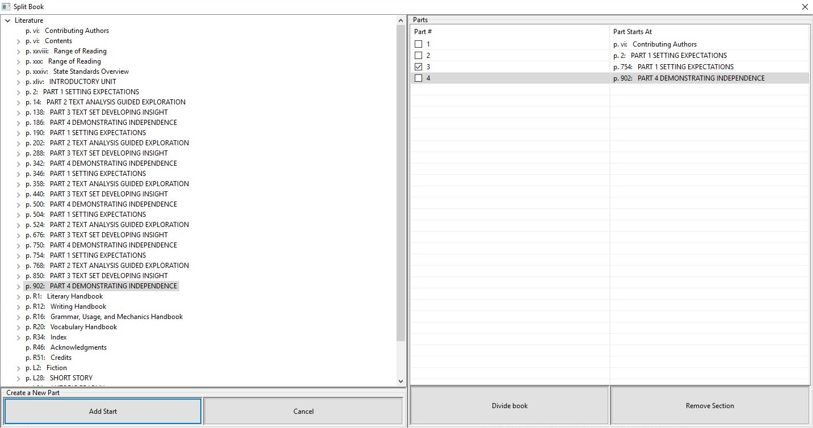
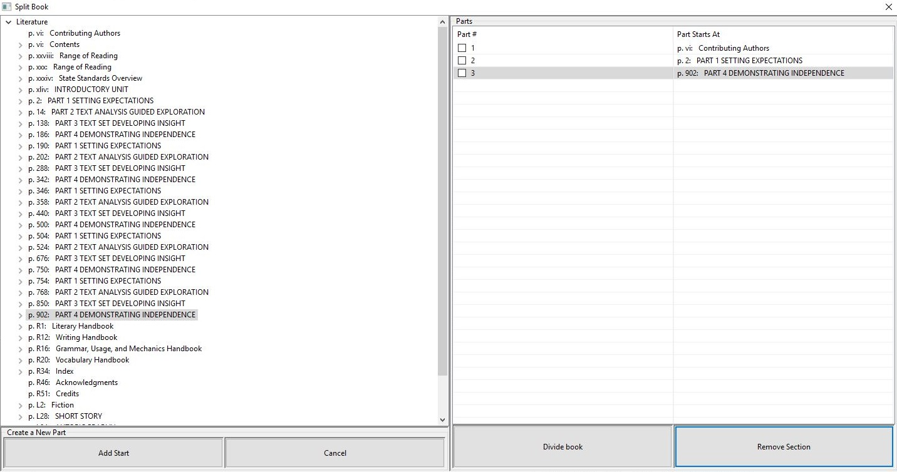
In the example above, when Part 3 is selected to be removed, Part 4 "moves up" to that spot, and becomes the new starting point for Part 3.
Divide Book: Once the desired number of parts are chosen and designated, the book is ready to be split. Click this button to begin the splitting process.
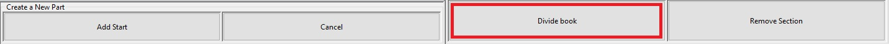
Once clicked, BrailleBlaster takes a few moments to work as it processes the different parts into separate files. When completed, the view returns to the main BrailleBlaster window. Note: This return to the main editing interface is the only indication that the operation is completed. Once this has occurred, you can locate the created files in the folder where the original file was located.
Cancel: Click this button to exit the Split Book window. Performing this action removes all of the part divisions you may have selected.
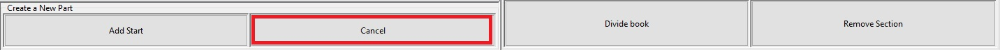
The split part files are saved into the same directory as the original book file. Each part is saved as a separate BBX file with the original file name plus the part number. These files can then be opened separately in BB, allowing different sections of the same book to be worked on by different transcribers. Do not rename the files after splitting because then it will not be possible to merge them back together. Merging files relies entirely on the names of the files being the same as when they were split.
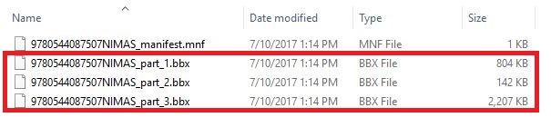
In addition to the split part files, a manifest file is also created automatically as part of the splitting process. This file is named the same as the original file with the addition of "_manifest" at the end. It has the file extension MNF (manifest). This file is necessary for merging split parts back into a single file, and is used in the Merge function, as described below.
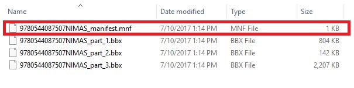
Remember that if you rename a split file, it will not be merged. Merging files back together relies entirely on the file names being the same as when the files were split! If you want a different file name, rename the file BEFORE splitting.
To merge files, follow these steps:
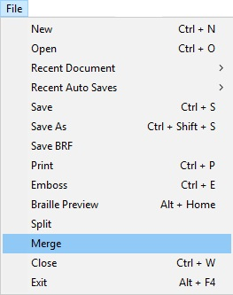
This opens the following prompt:
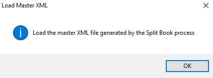
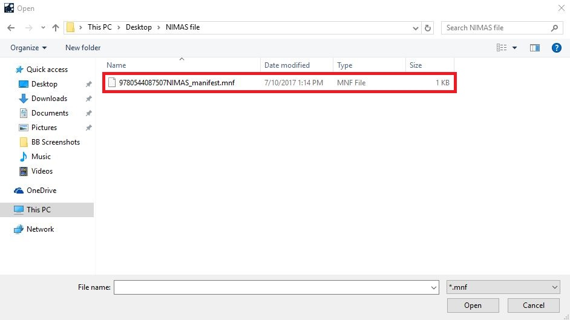
Note: The split part files MUST be in the same folder as the manifest file for this function to work.
BrailleBlaster processes the files for a few moments then opens the new, merged document in the main BrailleBlaster window. This new file is automatically titled the same as the original file with "_merged" added to the end, and has a BBX extension. The new file may now be edited and saved in BrailleBlaster in the usual manner.
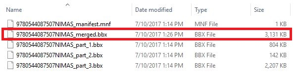
Note: As seen above, the merge operation does not remove the separate parts files. These remain in the folder and can be manually deleted as needed.
Shortcut: Ctrl + W
Closes the current document. If more than one document is open it closes the selected document.
Shortcut: Alt + F4
Closes the BrailleBlaster program.
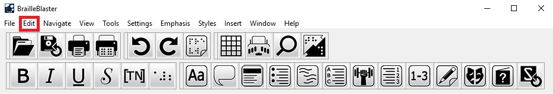
Shortcut: Ctrl + X
Removes selected (highlighted) text and temporarily saves it to the system; only works in the print view.
Shortcut: Ctrl + C
Copies selected (highlighted) text and saves it to the clipboard; only works in the print view.
Shortcut: Ctrl + V
Inserts selected cut or copied text; only works in the print view.
Shortcut: Ctrl + H
There are instances in which text should remain in the XML source file but should not appear in the braille translation. To remove this content from the active file:
The content will no longer appear in the Print View, Braille View, Braille Preview, and will not be included in the embossed text or BRF but will remain in the XML file for future use.
Shortcut: Ctrl + Z
Undoes the most recent action or edit.
Shortcut: Ctrl + Y
Redoes the most recently undone action or edit.
This tool can be used to change print and braille page numbers as needed. It can be easily accessed by right-clicking and selecting "Edit Page Number" which brings up the following dialog box:
Only appears if there is a print page number already present on the page selected. This textbox displays the current print page number. This number displayed can be replaced with either another number (7, v, IV, etc.) or a combination of two print page numbers. This affects the first page number and all of the runovers. You can also set the print page number to be Direct translated or Uncontracted. Either highlight the portion you would like affected or simply put your cursor inside the text box to affect the entire page number. This allows for a lot more options and user control when adding or editing page numbers.
Once a hyphen is inserted into the Change Previous Print Page Indicator textbox, these options become available. These options are based on rules for print page numbers found in Braille Formats Principles of Print-to-Braille Transcription, 2016 (Braille Formats, 2016).
Example: The runovers for print page number 5-6 are a5-6, b5-6, etc.
Example: The runovers for print page number 1-5 are a5, b5, etc.
This button deletes the print page number and indicator entirely. This is useful for omitting an entire print page number and its runovers.
Note: Requires all numbers be entered in ASCII. For example, print page 5 would be typed as "#e".
The Page Change List shows all of the changes you have made to the page numbers and also allows you to go to those changes to review them or delete them.
Shortcut: Ctrl + F
This command opens the Find/Replace dialog box. There are two text boxes: Find Text and Replace with.
In this box you can type any character(s) you wish to search for. The drop-down arrow on the right of the text field allows you to see recently searched-for text.
Below the text box are two optional checkboxes: Case sensitive and Whole word.
Both boxes can be checked simultaneously if, for example, you wanted to search for all capitalized instances of the whole word "THE."
Replace with is used to replace text found throughout the document. You can replace one or as many occurrences as you like. For example, if you wanted to replace an instance of the word even with the word odd, you would type "even" in the Find Text box and "odd" in the Replace with box. Then click Find until you find the instance that needs replacing. If you wanted to replace all instances of the word even with the word odd, you would click Replace All.
Example: If you enter "even" in the Find box and "odd" in the replace box with Match case checked, "Even" is replace with "Odd" and "EVEN" with "ODD."
Note: This option only works with lowercase, all uppercase, and initial case but not with camel-capped words (BrailleBlaster) or oddly capped words (BrAiLLeBlASTer).
Click this button to find the next instance of the text you typed in the Find Text field.
Clicking Find does not change the document. The Find button moves through the document, selecting each instance of the specified text, and allowing you to alter it as needed on a one-by-one basis.
Note: You can have text in the Replace with field when you click Find.
The Replace/Find button is used to replace the text entered in the Find field with text entered in the Replace with field. After finding the instance you wish to change, click Replace/Find to make the change. This changes only the individual, selected instance of text.
This function is useful if you only need to change a few instances throughout a document rather than all instances at once. Leaving the replace box empty allows you to delete the text found.
Replaces all instances of the text specified in the Find Text field with the text specified in the Replace with field with one click. This can be useful if you know your document has a consistent, predictable pattern of needed changes.
Caution: When using this option, be sure to specify the exact text you want to replace throughout the document by using the appropriate Case sensitive or Whole word, and by formatting search options so that you only change the content that you want to change.
Click this button to open the Formatting window. Here you see two columns: Style and Containers and Text Attributes.
There are two radio buttons to choose from: Add and Remove.
Note: Only one style can be added or removed at a time. Clicking a different style and then the Modify button simply replaces the style selected in the bottom text box.
There are two radio buttons to choose from: Add and Remove.
Below Emphasis is a list of emphasis and text attribute formats used in braille. These include font attributes such as bold, italics, underline, and script, as well as different modes of braille translation, such as direct translation and uncontracted braille.
This adds the selected attribute to the field at the bottom of the column. In this column, you can select multiple attributes to find and replace. You must select each one individually, then click Modify. This adds the selection to the list those you have already chosen.
Once you have selected either the style or emphasis attribute you want (or both), click the Done button to return to the Find/Replace dialog. Now, you see the formatting options you selected below the Find Text and Replace with fields.
Both Find and Replace have a Reset button next to the Modify button. Clicking this button removes any of the selected items in either the style or emphasis column and also removes any entries from that text box.
Example: Clicking the Reset button on the left side removes any items in the Find box as well as removes selection from both the style and emphasis columns.
Click Reset to clear all selected formatting options and checkboxes. The most recently searched text remains in the Find Text and Replace with fields.
Click Close to close the Find/Replace dialog.
Shortcut: F3
If Find/Replace has been used at least once, this button repeats the last search that was initiated.
Shortcut: Enter
While your cursor is inside an element (piece of text), pressing enter will split that element into two elements. The new, second element will have the same style as the element that was split.
Shortcut: Ctrl + Enter
This feature forces everything after the cursor to the next braille page. Using this feature a second time at the same location will again force everything after the cursor to the next braille page which creates a blank braille page. You can then continue using this feature at the same cursor location to create blank braille pages as needed.
Note: You can also use Enter as many times as you need to create new braille pages. These pages will appear with a paragraph mark set in cell 3. You can add more text to the page and delete the paragraph mark, but the page cannot be left completely blank at the end of the document.
Shortcut: Shift + Enter
This command inserts a line break at the current location of the cursor, dropping all text following the cursor down to the next braille line while keeping it within the same element and style. The text starts in the runover cell determined by the current element's style. For instance, if the style is Body Text, inserting a line break will start the line on cell 1.
This command sets indentation position of the text at the cursor's current position. Clicking the command will open a dialog box where you can type in the desired cell number you wish the current cursor position to start on. If you type in a number lower than the cell the text is currently on, it will drop down to the next line and begin on that cell. This command does not work if the cursor is at the end of a line.
Shortcut: Ctrl + G
Opens a window that allows you to select navigation to a:The ordinal page is a braille page without regards to formatting. For example, if there was a volume with 3 t-pages, 2 p-pages, and 100 regular pages the first regular page would ordinal page 6.
Shortcut: Ctrl + Home
Goes to the beginning of the document.
Shortcut: Ctrl + End
Goes to the end of the document.
Shortcut: Alt + End
The Book Tree navigation menu displays all of the headings in the file arranged according to hierarchy. This hierarchy is based on a combination of the Section tags and the braille headings applied by the publisher.
When first opened, only the document title is displayed, and you must click the caret to the left of the text to go to the next level.
Toggling this option allows you to switch between viewing braille to viewing the ASCII equivalent of braille in the Braille View.
Shortcut: F5
Refreshes the translation of the entire text. Can be used to force BrailleBlaster to update in order to clear out a rendering error.
Shortcut: Ctrl + "+"
Increases the size of the text in all views, including the Braille Preview window.
Shortcut: Ctrl + "-"
Decreases the size of the text in all views, including the Braille Preview window.
Since the Style Pane only shows the style associated with the element, the breadcrumb viewer shows the different levels that are associated with that style. These include any containers like boxes or poetic stanzas and also section tags that were added by the publisher. Clicking on any of these buttons will select everything within that container.
Note: When using a screen reader while Breadcrumbs is active, the screen reader will read whenever there is a change in Breadcrumbs. If you do not want them to be read, deactivate Breadcrumbs through View > Show Breadcrumbs.
The Production Note Manager is a tool that was designed to manage production notes which are typically notes added by the publisher that are meant to assist with the physical production of the text. Usually they are concerned with information such as "Image spans to next page." and are not found in the actual print book. Since they are not usually in the print book, you will usually not want to include them in the braille version. This tool assists with their removal by displaying all of them in a list followed by three radio buttons. The three radio buttons are:
At the top of the dialog there is a section titled Global Options with three radio buttons: Keep All, Hide All, and Remove All. These allow the same action to be taken for all production notes at once. Click Apply to apply your chosen option to the entire document, or Cancel to leave the dialog.
Shortcut: F7
Checks for misspelled words in the text being translated into braille.
Spell check can replace a single instance of an incorrectly spelled word, replace all instances of that word, skip that instance, ignore all instances, or add the word to the dictionary.
In BrailleBlaster, transcriber-generated pages are created using the T-Page Generator. This tool allows you to insert necessary information and copy it to subsequent volumes. It also puts each volume's t-pages at the beginning of each volume by using the divisions created by the user.
Note: The T-Page Generator is most useful when volume divisions have already been added to the document.
Note: The following buttons are located at the bottom of the T-Page generator dialog and are present in each of the four tabs in the dialog.
These options allow the user to move between created volumes to review, add, or edit content in the transcriber-generated pages. While a single volume's information can be copied to all volumes at once, individual changes or edits must be done one volume at a time.
After selecting this option, a dialog box pops up asking the user if they want to confirm these changes. The changes occur when the user clicks Yes, or if they do not want to confirm these changes, they can select No.
This feature inserts the information from the transcriber-generated pages into the document and closes the window.
Note: Once the information has been inserted into the volume, it should only be edited via this window.
Each element of the braille title page is labeled by the name used in Braille Formats, 2016.
Enter the text for each element into the appropriate text box. BrailleBlaster automatically adds blank lines as needed between the sections so that the title page is formatted according to Braille Formats, 2016.
Sections that need to be filled out:Emphasis: This drop down allows you to add font attributes to material in the title page text boxes and throughout the T-pages Generator.
Translation: This drop down menu has two choices: Uncontracted or Direct. These options allow you to set a portion of text to be in uncontracted braille, or to translate direct ASCII braille, respectively.
The style of braille is applied to the selected text. A magenta highlight around the text indicates Uncontracted, while a dark red highlight indicates Direct.
Margins: This option allows you to set your own margins on Title Page 1. The default margins are set to 1-3.
Use this text box to insert a secondary title page, which may be required based on the braille format or the publishing house standards for which the braille is being created.
Use this window to add symbols for the Special Symbols page. The Special Symbols heading is added automatically if symbols are inserted on this page.
Add: Add opens a dialog box with addition options to select: Type, ASCII Symbol, Description, and Pick From List.
Edit: Use this option to edit a previously entered symbol.
Delete: Deletes the selected symbol.
Move Up/Move Down: Allows the user to manually rearrange the symbols based on the necessary braille format rules.
Rearrange: Automatically rearranges the symbols in order of braille dot complexity, in accordance with UEB rules .
Insert Prefix...: Click this button to open a dialog box that allows you to add a prefix symbol to all symbols in your list. This is useful when transcribing material in UEB, which requires the "dot locator for mention" symbol to appear before each symbol on the special symbols page.
The text box defaults to showing the ASCII characters for the dot locator symbol (.=).
Autofill: Clicking this button opens a new window with two radio buttons labeled Volume X only and All volumes, with X being the volume the cursor is currently in.
The All volumes button is selected by default.
The symbols BrailleBlaster found are now added to the list in order of braille dot complexity.
Auto Fill Options...: Clicking this button opens up a window that displays all the current special symbols in the list (shown in ASCII). There are six buttons below the list: Add, Edit, Delete, Save, Cancel, and Restore Default.
Click Save to save changes, or click Cancel to close the window without saving.
Clicking Yes removes all symbols you have added or edited through any of the functions described above. All default symbols (detected and created by BrailleBlaster) remain. Click No to cancel and return to the Special Symbols List window.
Click on the Transcriber's Notes tab to open the transcriber's notes section of the T-page generator. This window is very similar to the Title Page 2 tab of the T-page generator, in that it has a single, editable text field with a menus for Emphasis and Translation. It also has the drop-down menu Heading which allows the user to add a centered heading to the transcriber's notes page.
The text "TRANSCRIBER'S NOTES" is automatically placed in the text box as a heading (this default text appears as a centered heading in the Braille and Print views, but is left-aligned in this window). You can type or copy/paste any necessary transcriber's notes for the volume(s) here.
Each new paragraph after the heading defaults to body text style (3-1 indent/runover).
Before beginning, it is best to have volume divisions already created so that you can easily copy the t-page information from one volume to the next. The T-Page Generator works with a single-volume file, but if the file will eventually be split into multiple volumes, it is best to insert those volume breaks before using the T-Page Generator so work is not repeated.
Shortcut: Ctrl + T
BrailleBlaster was created with the goal of continuously expanding and improving the software by allowing users to correct braille translations that it has translated incorrectly.
To define the character:
Clicking this button opens a view of your corrections listed in alphabetic order. Corrections can then be edited or deleted as needed.
Note: the corrections in the screenshot below are incorrect for UEB and are just examples.
Shortcut: F6
This tool opens a separate window where you may type braille directly using FDS and JKL as the 6 dots of braille.
| Letter | Dot Number |
|---|---|
| F | 1 |
| D | 2 |
| S | 3 |
| J | 4 |
| K | 5 |
| L | 6 |
If you find this feature doesn't work for you, it is most likely your keyboard. Not all keyboards allow more than one letter to be pressed at a time.
After the braille is typed, you have two options for inserting your text into your document:
This ASCII is then directly translated into braille as what you typed in the text box.
This tool adds a set of options to the toolbar that allows you to add line numbers to the document.
This tool is primarily used for line numbered prose. It can be used for poetry as well, but poetry line numbering is typically interpreted automatically by BrailleBlaster. See Poetry for more information.
After selecting Line Number Tools, several fields and buttons appear on the toolbar. The first is the Wrap Prose button (shortcut: Ctrl + F2).
Shortcut: Ctrl + F2
In order for BrailleBlaster to recognize the line numbers, the text in which they appear must first be wrapped in a Prose tag.
Note: This must be done in order for line numbers to show up in the Print and Braille views.
Note: You can also remove the Prose tag from an element the same way that it is applied, by highlighting the text and selecting the Wrap Prose button.
This editable text field allows you to set the initial line number you wish to appear in the text. Line numbers cannot have greater than 10 digits. The default is 1.
This editable text field allows you to set the increment by which all lines are numbered after the first line is numbered. The default is 1.
Example: With the Increment by field set to 5, each time you insert a line number after the first, the number increases by 5 (5 for the second line number, 10 for the third line number, 15 for the fourth line number and so on).
Shortcut: F2
Use this button to quickly insert line numbers in their appropriate places according to the text.
This places a line number tag in the Style view which automatically adjusts based on the settings you specified in the Line Number and Increment by fields.
Example: On the default setting (line number 1 and increment by 1), the first time you press F2, line number 1 is inserted. The second time you press F2, line number 2 is inserted, and so on.
BrailleBlaster is usually able to automatically insert line numbers for poetry based on the structure of the publisher's file. However, when needed, these numbers can be entered.
Shortcut: F4
BrailleBlaster allows you to edit or even remove line numbers from text as needed.
The Volume Manager tool is a "smart" volumes feature that allows you to set where volume breaks occur in the document, control what kinds of volumes they are, and insert t-pages, TOCs, and End of Volume statements.
Selecting Insert inserts a volume break into the document, either Normal, Preliminary, or Supplemental. The cursor must be placed in the document at the point where the break is to occur.
The ideal cursor location for a volume break is on a print page indicator, as this inserts the volume break before the indicator.
In addition to defining the text as belonging to specific volumes, selecting this option also inserts the END OF VOLUME statement and allows for some additional options. These include:
There are three different kinds of volumes that can be inserted. The main difference between them is the END OF VOLUME statement. Each agency has different rules about different types of volumes. Refer to your agency's guidelines for the appropriate use.
Using the Change Volume Type tool, you can change the selected volume's type from one type to another. This will affect the end-of-volume statement for that volume. The cursor must be placed somewhere in the volume you wish to change.
The Delete Current Volume command allows you to delete the volume break for the currently selected volume (e.g. the volume in which the cursor is located). This command only functions if a volume break has already been inserted into the document.
When a table is selected, this option opens the Table Editor window as detailed in the Table section. Information in the Table fields appears automatically according to the tagged text, and can be edited, formatted, and altered as described in the Table section.
Note: To use this tool, the cursor must be placed inside text tagged as a table. Otherwise, BrailleBlaster will generate the error pop-up "Cursor is not on table."
This feature converts any set of elements into a table. Simply highlight the elements that you want to turn into a table, then go to Tools > Convert Text to Table. A dialog will appear asking how many columns your table should have. After you have set your desired number of columns, the Table Editor opens with your text and can be edited just like a normal table.
The TOC Builder improves the creation of the Table of Contents (TOC) by speeding up and simplifying the process. It makes available a set of tools that not only apply the necessary margins and guide dots of a TOC but also automates the process of dividing the TOC between volumes. It is located in the Tools menu and when used opens a new set of tools on the toolbar.
You can create runovers in your table of contents by checking the box next to Override Margin. The two textboxes that follow are to place the number of the indent and the runover of a TOC entry that you are inputting.
Indent: Insert a number into this text box to determine the first line indent of the element. Entering an invalid number results in a warning "Invalid indent" and the style is not applied.
Runover: Insert a number into this text box to determine the runover of the element, (i.e., the margin of every line after the first line). Entering an invalid number results in a warning "Invalid runover" and the style is not applied.
A TOC Heading differs from a normal heading in that it is repeated in its appropriate volume.
This button applies a TOC Centered Heading to the element where the cursor is placed. This heading has a blank line before and after.
This button applies a TOC Centered Heading that doesn't have a blank line before or after.
When checked, this checkbox causes numbers at the end of a TOC Entry to have guide dots added before them and moves the number to the right margin. If a number at the end of a TOC Entry should not be considered a page number, uncheck this box and guide dots will not be added.
This button makes a highlighted portion of text a page number in the TOC regardless of whether it is a number or word. You can also take the Page Number off of an element that has been incorrectly misinterpreted as a page number by highlighting that element and selecting Page Number. This causes the guide dots to be removed and moves the number or word back next to the other text.
Once all volume divisions have been inserted in both the document as a whole (using Insert Volume Break) and in the TOC (using Volume Split), this button splits and repeats the volume divisions according to the rules of Braille Formats, 2016:
In order to be considered "contained" and also to be repeated, Volume Splits must be inserted; only TOC styles can be used. If a normal, non-TOC style is used, that element appears only in Volume 1 and not in subsequent volumes.
Note: It is advisable to complete the following work before opening the TOC Builder:This command is used to remove container tags, such as the List Tag, Poetic Stanza, and Boxes, reverting them to normal styles. Select the section of tagged text you want to change, then in Breadcrumbs click Container List, then go to Tools and select Unwrap Element. This will remove the container from the text.
Note that Unwrap Element cannot be selected unless the selected element is a container. The container types are List Tag, Poetic Stanza, Box, Full Box, and Prose. Additionally, both kinds of boxes can also be removed by selecting the entire box and reapplying the same kind of box.
If your NIMAS file has images that are attached with the print, then this tool can be used to give captions to images more easily since it allows for the viewing of the image within the program.
There are two ways to go about labelling the images in your document:There are many special rules for alphabetic references in braille that cause it to appear differently than it will in print. This makes it rather unique among print elements. For this reason there are several tools under this category. They are Add Uncontracted Glossary Items, Identify Guide Words, Adjust Term/Definition Spacing and Edit Guide Word.
This tool is provided for cases in which uncontracted glossary terms are required by Braille Formats, 2016.
The uncontracted glossary term is inserted according to the rules of Braille Formats, 2016. To remove the uncontracted words, simply follow the same steps and it will remove the uncontracted glossary terms from the document.
Adds guide words to an element in an index or glossary. This can also be used to add guide words to an entire alphabetic reference or a single item in an alphabetic reference. Select a section of text you want to apply guide words to and select Identify Guide Words from the Alphabetic Reference drop-down and this will create guide words in your document. See Selecting the Entire Glossary or Index for more information.
This function has no effect on styles outside of the list, index, or glossary categories.
Adjusts the space between a term and definition in a glossary. To use, first select an element that was either marked by the publisher as a term and definition or has its guide words identified by the Identify Guide Words tool and then activate this tool from the menu. A dialog box will appear with two radio buttons, one marked One and the other marked Two. Select One for one space between the term and definition and select Two for two spaces between the term and definition. It is most useful to select the entire alphabetic reference that needs to be edited rather than selecting each element one at a time.
When a guide word has been automatically added by BrailleBlaster, it is based on the term identified by the publisher as the "Glossary Term." This glossary term might be "The Democratic Republic of Congo," which likely does not fit as a guide word.
To edit the Guide Word:
Note: If you use Edit Guide Word on a glossary term that is not at the top or bottom of a braille page, and therefore does not appear as a guide word; it still changes the guide word for that term, but there is no visible change at the bottom of the page.
Note: The Edit Guide Word tool is only available if the term selected could potentially have a guide word. If you highlight a word outside of a glossary, for instance, this tool is greyed out.
For more information about formatting a glossary see Working with Alphabetic References.
There are action buttons that are present regardless of the tab in Settings that has been selected. These three buttons at the bottom of the dialog are Ok, Make Default, and Cancel.
The options under the Page Properties tab adjust the page size or margins of the entire document.
Changing the page size alters both the size of the paper of the embossed braille and the braille margins on that page. Adjusting the page margins changes the margins around the braille on that page. It only affects the braille margins if there is not enough space to accommodate both the braille and page margins that have been selected.
Continuation Symbol For Print Pages: Automatically set for Yes, this option sets whether or not a continuation letter appears before print page numbers when they continue past one braille page in length.
Continuation Grade 1 Indicator: Turning on this option causes a Grade 1 Indicator to appear between the continuation letter and the print page number if the print page number begins with a letter.
Note: This is not a rule in Braille Formats, 2016, but it is a convention. Therefore, it can be toggled on or off as the customer or printing house demands.
Continue Pages: This option sets whether braille page numbers continue from one volume to the next or if they reset.
Example: If this option is set to yes, and Volume 1 ends on braille page 119, then Volume 2 begins on braille page 121. If set for no, Volume 2 begins on braille page 1.
Guide Words: If Guide Words is set to "Yes," guide words are automatically added to the translation whenever the Glossary style is used.
If the Glossary style is not used in the document, changing this setting has no effect. Set Guide Words to "No" if the Glossary style is used but guide words are not needed.
Notifications: Allows you to select how you would like errors to display. You can choose from three different options on how you would like errors to appear:
Error Recovery: Allows you to decide if you want BrailleBlaster to try to recover after it encounters an error or not.
Tell APH about this error so they can fix it: Allows you to decided whether or not to report errors to APH with yes or no buttons.
Default Embosser: Allows you to select your default embosser from a drop-down list.
In BrailleBlaster, emphasis can only be applied to text that has already been created. Therefore, you must:
Each emphasis type is detailed in Rules of Unified English Braille, except for Transcriber Note Symbols (TN Symbols).
TN Symbols is a special emphasis that adds a TN symbol at the beginning and end of the text to which it is applied. Adding this emphasis to three elements, for example, puts one TN symbol at the beginning of the first element and one TN symbol at the end of the last element. TN symbols and the text between them are highlighted in gold in the braille view so they are easier to locate.
Shortcut: Ctrl + Shift + R
If text is highlighted, this feature removes all emphasis from that highlighted selection. This works for whatever amount of text is selected: a few words, a few paragraphs, or several pages.
Headings do not usually need to be emphasized in braille. Using this option BrailleBlaster automatically removes all emphasis from headings in the document.
As with removing emphasis from lists items, the transcriber can either manually remove emphasis for each heading, or use this tool to remove all emphasis and add it back in where it is appropriate.
Note: It is advisable to save your work before using this feature.
In print documents, the numbers or letters at the beginning of list items can appear in bold. This emphasis is usually considered unnecessary in braille and as such is removed in braille documents.
By selecting this option, BB searches the document and removes the emphasis from numbers and letters at the beginning of lists.
Examples (where emphasis would be removed):
|
1. List Item 2. List Item 3. List Item |
OR
|
A. List Item B. List Item C. List Item |
This operation is not foolproof, and it is possible that numbers or letters in list items other than those intended could be affected as well.
The two approaches are:
It is up to the transcriber to decide which approach requires the least effort.
Note: It is advisable to save your work before using this feature.
Shortcut: Ctrl + R
This action repeats the last style that was applied. If no style has been applied, and this feature is used, a popup appears letting you know there is no style to repeat.
Style loadouts are designed to make the transcription process faster and to offset the fact that there are not enough keys on the keyboard to make a hotkey for every style. Therefore, a loadout refers to either a section of styles or subsection of styles.
Please refer to the list of shortcut keys in Appendix A for a complete list of all loadouts and their hotkeys.
Example of List Loadouts:
The List category has subsections because this is a nested style. Pressing Ctrl + Shift + L brings up a menu with the different levels of nesting. For example, choosing List 3 Levels sets all of the list styles in that subsection to a press of the Alt key and a number. So, for this loadout, Alt + 1 is L1-7, Alt + 2 is L3-7, and Alt + 3 is L5-7.
This adjusts the number of style levels that appear in each drop-down that contains styles with multiple levels. The styles with multiple levels are the nested styles; lists, glossary, exercise, contents, and so on. The default number of levels is eight but some users might find they do not need that many levels.
Style options allow the user to change the rules of a specific instance of a style.
Applying this style option to an element causes that element to stay with whichever element follows it. If the second element moves to a new braille page because of changes to formatting, the element that has Keep With Next applied to it also moves to that braille page.
These style options, when applied to an element, cause that specific instance of the style to have the set number of lines either before or after. To apply this style, follow these steps:
Every style that begins on a new line already has a value of 1 for lines before and after. If you want that element to have a blank line before or after it, set the value as 2.
Styles that already have blank lines by default, such as Centered Headings, have a value of 2 for lines before and a value of 2 for lines after. To add an extra blank line before a Centered Heading, set the Lines Before value as 3.
This is useful for setting graphics or material that needs to appear on facing pages. When formatting decisions cause an element or elements to move, they continue to appear where needed.
Keep in mind that even if None is selected, when you have a running head or guide words, that element still skips those lines because they are reserved for those elements.
These style options are used to insert a blank braille page before or after the selected element. This ensures that formatting decisions made before this point in the document do not remove a blank page that the transcriber deems necessary.
This style option is used to turn guide words on or off for a single element or several elements but does not affect guide words elsewhere in the text. This is useful when guide words appear in a section where your printing house does not usually put them, but it is not feasible to turn off guide words in the Setting menu, because they are still needed in other areas of the document.
Style menu items are found both in the Styles menu and as buttons on the toolbar.
Margins are presented as a hyphenated number with the indent listed first and the runover second. For example, a list item (which would be in 1-3) has an indent of 1 and a runover of 3. In other words, the first symbol of the element with this style appears in cell 1, and if a second line is needed, that line and all subsequent lines begin in cell 3.
Formatting is presented as though the style was inserted with no context. A lot of BrailleBlaster's formatting is contextual, and the styles conform to the rules laid out in Braille Formats, 2016. If you discover an instance where BrailleBlaster has incorrectly applied a style from Braille Formats, 2016, please notify us by email at brailleblaster.org.
A simple, left justified paragraph.
A simple indented paragraph.
Centered text with no automatic blank lines before or after.
Used to display element that are normally 1-3.
A displayed, left justified paragraph.
A displayed indented paragraph.
Used to style captions. Still needs transcriber's notes symbols added if appropriate.
Used to style picture descriptions. Still needs transcriber's notes symbols added.
List Tag: Used to wrap list styles in a list container
The List styles are a nested style. So each style functions the same, in terms of formatting; the only difference being the margins.
Level also affects the runover and formatting. For example, all Level 2s have a runover of 5 and do not have a blank line between them, but there is a blank line between Level 2s and Level 3s.
Poetic Stanza: Used to wrap poetry styles; forces a blank line between Poetry styles of the same level.
The Poetry styles are a nested style. So each style functions the same in terms of formatting; the only difference being the margins.
Level also affects the runover and formatting. For example, all Level 2s have a runover of 5 and do not have a blank line between them, but there is a blank line between Level 2s and Level 3s.
The Glossary styles are a nested style. So each style functions the same in terms of formatting; the only difference being the margins.
Level also affects the runover and formatting. For example, all Level 2s have a runover of 5 and do not have a blank line between them, but there is a blank line between Level 2s and Level 3s.
Used for the first paragraph of directions.
Used for the second paragraph of directions.
The Exercise styles are a nested style. So each style functions the same in terms of formatting; the only difference being the margins.
Level also affects the runover and formatting. For example, all Level 2s have a runover of 5 and do not have a blank line between them, but there is a blank line between Level 2s and Level 3s.
The Index styles are a nested style. So each style functions the same in terms of formatting; the only difference being the margins.
Level also affects the runover and formatting. For example, all Level 2s have a runover of 5 and do not have a blank line between them, but there is a blank line between Level 2s and Level 3s.
The Numeric styles are a nested style. So each style functions the same in terms of formatting; the only difference being the margins.
Used to make a incidental note that has a heading.
Used to make a incidental note that does not have a heading.
Used for notes at the bottom of a print page.
Prose Play 1-3: Used for the first paragraph of a speaker in a prose play.
Prose Play 5-3: Used for every paragraph after the first for a speaker in a prose play.
Stage Directions 7-7: Used for the first paragraph of stage directions.
Stage Directions Verse 9-7: Used for every paragraph after the first stage direction.
Verse Play 1-5: Used for the first line of a speaker in a verse play.
Verse Play 3-5: Used for every line after the first of a speaker in a verse play.
Can be applied to the first alphabetic division in a glossary.
This style can be used for an attribution when the previous element's last line is in cell 1.
Used for a source citation or permission to copy.
Used to add a guide word for the word or series of words to which it is applied to the last line of the braille page.
Makes highlighted text the print page number; creating a print page break if in the middle of a braille page.
Used to apply the Transcriber's Note style and symbols to text that is already written.
Box: Puts a box line before and after the element or elements it is applied to. A top box line consists of the braille cell (2356) going across the width of the page. A bottom box line consists of the braille cell (1245) going across the width of the page.
Full Box: Puts a full celled box line before and after the element or elements it is applied to. A full top and bottom box line consist of the full braille cell (123456) going across the width of the page.
Color Full Box: Functions the same way a full box does, but when this option is selected, a dialog box appears. Type the color you want the box to be and select OK. This will place the color name in Transcriber's Notes before beginning the top box line.
This option inserts the Note Separation Line found in Braille Formats, 2016. Similar to the Insert Volume option, the Insert Note Separation Line option is inserted directly before the cursor. It automatically:
Inserts a set number of blank lines. Once you use this tool, a dialog opens.
To insert a table in the text, place the cursor in the spot you want the table to begin, then click Insert > Table to open the Table Editor screen.
This screen shows editable fields for headings, rows, and columns. The user can type in each cell or paste in content.
The number of rows and columns can be edited in the bottom right of the screen. By default, the Table Editor generates 3 rows and 3 columns. The user can add or remove columns and rows as by entering the the desired numbers in the textboxes. The Editor then automatically displays a table template with the new row and column numbers.
In the lower-right corner is a drop-down menu called Table type. This menu provides several options for how to display the table in braille. It is set to auto by default.
Auto: BrailleBlaster formats the table automatically for you. Currently, it can only create automatic tables as simple and listed tables.
Simple: Sets the table to display as a standard braille table with columns and rows and a separator line beneath each column heading. A button appears to the right of the drop-down menu labeled Simple Table Options. Click this to open the Simple Table Options screen.
Here, several specific options can be changed.
In each field, the number displayed represents the number of braille cells that column takes up. Between each column is a number in parentheses, either a (1) or a (2). This number represents the number of cells between each column. The fields can be edited to change the width of each column as desired.
The text "Total Width: x" is shown below the fields, where x is the total number of cells the columns (and the spaces between them) occupy on the braille page. This number automatically changes as the column widths are changed. This can be useful to ensure custom column widths do not exceed the width of the braille page.
When satisfied with any changes to these options, click Ok to return to the Table Editor.
Listed: This sets the table to a listed table format. Information in the row fields become cell 5 headings while information in the column heading fields become the first part of each listed item, followed by a colon (inserted automatically). Information in the column fields is added after the colon for each appropriate list item.
Stairstep: Select this option to set the table to Stairstep format. A button appears to the right of the drop-down menu labeled Create Transcriber Note Heading. Click this button to open the Create Transcriber's Note Heading window.
This window configures the Stairstep table. Several fields appear in the window, equal to the number of columns in the table. The column headings are automatically included in the appropriate field if they have already been inserted in the Table Editor.
The first field is for the transcriber's note that precedes the table, informing the reader of the Stairstep format. The text defaults to "Table changes as follows:" but may be edited as needed. It is set on a 7-5 runover.
The next fields proceed in the standard Stairstep format, with the first column entry starting on cell 1, the second on cell 3, the third on cell 5, and so on. Each of these fields can be edited as needed.
All fields in this window can have font attributes applied to them. To apply the font attribute(s):
The translation of each field's entry can also be modified. Click the Translation button to open the Change translation drop-down menu.
Here you can choose between Uncontracted and Direct.
When satisfied with changes to the Stairstep table options, click Ok to return to the Table Editor.
Linear: When selected, a button labeled Create Transcriber Note Heading appears next to the drop-down menu. Click this button to open the Create Transcriber Note Heading window.
This window is similar to the one utilized in the Stairstep table option.
As in the Stairstep table options, font attributes and uncontracted/direct translation styles can be applied to text in these fields.
When satisfied with these fields, click Ok to return to the Table Editor screen.
At the top of the Table Editor are three menus: Tools, Emphasis, and Translation.
Tools:
Emphasis: This menu allows font attributes to be applied to individual parts of the table text where required and includes bold, italics, underline, and more.
Translation:
At the bottom-left corner of the Table Editor window are two buttons: Reformat Table and Advanced Reformat.
Reformat Table: This button is used to change the table into normal text. This feature removes the table tags from the XML and is useful if the print book has content formatted as a table that should not be formatted as a table in the braille, such as columned lists.
When clicked, this button shows a prompt warning that the process cannot be reversed. Click Yes to continue or No to cancel.
If you clicked Yes, a new window opens, displaying a list of styles.
Advanced Reformat: This button does the same thing as the Reformat Table button except that it allows each field of the table to have a different style applied to it when the table is reformatted. For example, column 1 could be set to Cell 5 heading while rows 2, 3, 4, etc., could be set to 1-3. Once all fields have a style selected, the table is reformatted into normal text with the styles applied appropriately.
This tool allows you add a Running Head to your document on all of the pages except for t1 and braille page 1. Choose one of the following:
Note: BrailleBlaster does not check the inserted running head against every page number in the document. If a running head is too long, part of it will be cut off so that it will fit on one line. Therefore, the user should confirm that the running head is the proper length to fit all page number types and sizes as no user prompt will be given from BrailleBlaster about the length of the running head.
This tool allows you to add a Print Page Indicator with no Print page number to the text as is required by Braille Formats, 2016 for print pages without numbers.
Each of the three views (Print, Braille, and Style) can be toggled via this menu. Currently, when a view is disabled and then enabled, it moves to the right-hand side.
This opens a dialog that allows you to rearrange the views. The view at the top of this list appears the furthest to the left, and the view at the bottom appears furthest to the right. Only the views that are visible are available to rearrange in the dialog.
Each of the toolbar icons is arranged according to group, and each group can be hidden if not needed. Hiding some or all icons increases the space available for the views.
These options adjust the size of the toolbar icons. Making them smaller increases the space available for the views.
The following text appears in a dialog box when this option is opened in BrailleBlaster, explaining how the ASCII Math Editor functions:
ASCII Math: We have chosen to represent math in the text view using ASCII Math. It is fully editable using just your keyboard. If you are unfamiliar with ASCII Math, please visit asciimath.org. We have provided you with the ASCII Math editor so that you will not have to leave BrailleBlaster to look up how to represent unfamiliar math equations. There are tabs for each category of symbols. You can cycle through them using the arrow keys. Tab to enter the table, and then you can use the arrow keys to find your symbol. We have provided some examples in the Special and Examples tabs to show you how to insert math with special formatting and common calculus formulas. An image of your ASCII Math will appear in the bottom box.
Image Describer: You can also choose to six-key your math through the Image Describer if you have a zipped file that contains images, or through the six-key dialog (F6) if you have no images. Be aware that text that is six-keyed or direct translated will not update when you change translation tables.
Changing braille codes: Math inserted from the ASCII Editor will automatically be marked as math and will use your default math translation table (Nemeth or UEB Math) that you have selected from the main settings menu. This allows you to use the same transcribed document to create documents in multiple braille codes. You will know that you have successfully marked text as math because the text will be highlighted in pink in the print view.
Copy and Paste of Math: Due to the internal syntax of MathML, you can only copy math nodes as whole equations.
You can choose to only display the most commonly used tabs via the Show Tabs menu option.
Use these tabs to find math symbols to use in your equation or type it out. As you place math symbols in the text box, those symbols will appear as they appear in print in the box below.
You can also change your settings for the ASCII Math Editor via the Settings menu option.
From here you can make the ASCII Math Editor Full Screen or choose to View Image with MathJax, which shows your text as an image within the ASCII Math Editor. This image appears below the textbox in the space that reads, "As you type, your Image will appear here". This is to ensure the most accurate transcription of math by showing the user what the math equation would look like in the print view.
There are four buttons at the bottom of the dialog box:Shortcut: Ctrl + M
This tool allows for a highlighted section of text to be translated through the ASCII Math Editor.
This tool will remove the ASCII Math Editor's translation of the highlighted section of text.
This option will delete the highlighted ASCII Math Editor's translated text from the file.
You can also make a numeric series using the Toggle Numeric Series tool in the Math drop-down menu. This tool places dot 5's where the spaces were in the highlighted text. If there are two spaces, there are two dot 5's.
Opens the BrailleBlaster website in your default browser.
Shortcut: F1
Opens a local copy of this user guide.
Opens a pop-up with information about the current build of BrailleBlaster you are using. This is useful for reporting bugs.
Checks for new versions of BrailleBlaster.
Provides the ability to view or save a software error log in the event that BrailleBlaster encounters an unexpected problem. This log can be provided to technical support staff to assist them in troubleshooting.
If BrailleBlaster worked fine yesterday and after updating it does not open any documents, the likely cause is a conflict in updating the program. To resolve this issue, use this feature.
Caution: This feature deletes all user data, which includes changes to the translation, page settings, and font size. It is not recommended that you use this feature unless instructed to do so by an APH employee.
There are many tools in BrailleBlaster to help you create braille alphabetic references, such as glossaries and indexes. While each tool is covered at various points of this document, this section shows how they all work together.
A lot of Alphabetic Reference tools work best if you select the entire alphabetic reference.
You may not immediately see guide words in your document, even when a glossary is correctly marked by the publisher.
If you need guide words to appear in one alphabetic reference but not another, you can set Guide Words to No for a particular section, even if the publisher has marked both sections to have guide words by default.
Finally, if you still do not have guide words, it means that this particular glossary was not coded as a glossary in the source file. However, you can still identify guide words manually. To do this:
Note: You may need to edit the added guide words. (See Editing Guide Words)
Note: Indexes do not have guide words by default. If guide words are needed, see Identify Guide Words.
Once Guide Words have been added, right-clicking on the word in the list calls up a dialog box that allows you to edit that guide word. Right-click on the word in the list, not the guide word at the bottom of the braille page.
BANA recommends special rules for glossaries with pronunciations in Braille Formats, 2016. The tools in BrailleBlaster accommodate these rules.
This tool adds the uncontracted form to glossaries that have pronunciation that require the uncontracted form. It works as a toggle so it can also remove the uncontracted terms if you have added them and later decided that they are not needed. It is found under Tools > Alphabetic Reference > Add/Remove Uncontracted Glossary Items. To best use this tool, make sure to select the entire glossary. More information about selecting the entire glossary can be found in Selecting the Entire Glossary or Index.
Occasionally publishers use images for complex diacritics. The Image Describer replaces these images with text.
| Key Combination | Description |
| FILE OPERATIONS | |
| CTRL + N | Create a new document |
| CTRL + O | Open a document |
| CTRL + W | Close a document |
| ALT + F4 | Quit BrailleBlaster |
| CTRL + S | Save the document |
| CTRL+SHIFT+S | Save the document in a custom location |
| CTRL + P | Print a document |
| CTRL + E | Emboss a document |
| ALT + HOME | Open the Braille Preview |
| ALT + END | Open Book Tree |
| EDITING | |
| CTRL + Z | Undo the last action |
| CTRL + Y | Redo the last action |
| CTRL + X | Cut the selected text |
| CTRL + C | Copy the selected text |
| CTRL + V | Paste copied text |
| CTRL + H | Hide the selected elements |
| CTRL + F | Open the find/replace pane |
| F3 | Repeat the last search |
| ENTER | Split Element |
| SHIFT + ENTER | Insert Line Break |
| CTRL + ENTER | Insert Page Break |
| F7 | Spell check |
| F5 | Refresh translation |
| CTRL + + | Increase font size 1 point |
| CTRL + - | Decrease font size 1 point |
| CTRL + SPACE | Insert non-breaking space (represented as a white rectangle with a black outline in the print view) |
| CTRL + R | Repeat last style applied |
| CTRL + T | Correct Braille translation |
| F6 | Six-Key Input |
| CTRL + F2 | Wrap Text |
| NAVIGATION | |
| ALT + P | Toggle Print View |
| CTRL + G | Open the page selection dialog |
| CTRL + HOME | Go to the first page of the current document |
| CTRL + END | Go to the last page of the current document |
| TAB | Set Cell Position |
| TYPEFORMS | |
| CTRL + B | Bold |
| CTRL + I | Italic |
| CTRL + U | Underline |
| ALT + SHIFT + S | Script |
| ALT + SHIFT + 1 | Transcriber-Defined Typeform 1 |
| ALT + SHIFT + 2 | Transcriber-Defined Typeform 2 |
| ALT + SHIFT + 3 | Transcriber-Defined Typeform 3 |
| ALT + SHIFT + 4 | Transcriber-Defined Typeform 4 |
| ALT + SHIFT + 5 | Transcriber-Defined Typeform 5 |
| CTRL + SHIFT + R | Remove Emphasis from Selection |
| SHIFT + F10 | Open sub-menu |
| LOADOUTS | |
| CTRL + SHIFT + M | Set Miscellaneous style loadout |
| CTRL + SHIFT + B | Set Basic style loadout |
| CTRL + SHIFT + C | Set Caption style loadout |
| CTRL + SHIFT + H | Set Heading style loadout |
| CTRL + SHIFT + L | Set Lists style loadout |
| CTRL + SHIFT + P | Set Poetry style loadout |
| CTRL + SHIFT + A | Set Plays style loadout |
| CTRL + SHIFT + G | Set Glossary style loadout |
| CTRL + SHIFT + E | Set Exercise Material style loadout |
| CTRL + SHIFT + I | Set Index style loadout |
| CTRL + SHIFT + U | Set Numeric style loadout |
| CTRL + SHIFT + N | Set Notes style loadout |
| ALT + NUMBER 1-8 | Apply the style corresponding to that index number in the list of styles of the current loadout |
| MISCELLANEOUS | |
| F1 | Open Braille Blaster User Guide |
| CTRL + M | Open Math Tools |
© 2016 American Printing House for the Blind
1839 Frankfort Avenue
Louisville, Kentucky 40206
www.aph.org